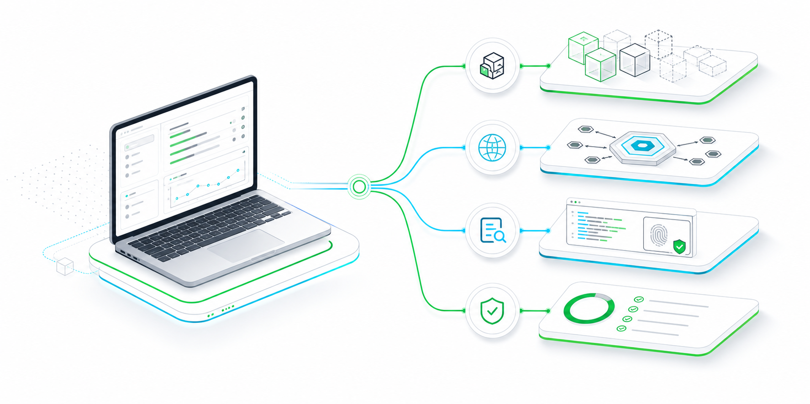

Ollama model stores
Walks Ollama manifests and blobs, records model names, file digests, sizes, and missing or invalid artifact references.
Semantic Inspection for Guarded Intelligence Layers
SIGIL inventories local LLM deployments, verifies model artifacts, checks runtime exposure, and connects native binary capability evidence to deterministic PASS/WARN/FAIL decisions.

The current implementation is intentionally narrow, but the pieces are already connected around local AI runtime safety.
Walks Ollama manifests and blobs, records model names, file digests, sizes, and missing or invalid artifact references.
Probes configured Ollama API endpoints and flags public-bind or non-local network hosts as findings.
Loads x86_64 objects, lifts a small instruction subset into IR, and maps external symbols such as network and process calls to capabilities.
Emits machine-readable evidence JSON and a Markdown AI-BOM for local runtime and model-store inspection results.
SIGIL was exercised against a real local Ollama installation with
gemma4:e2b on May 29, 2026. The run verified the model
store, checked a localhost Ollama API endpoint, hashed model blobs,
and produced both evidence JSON and an AI-BOM report.
0.24.0gemma4:e2breachablelocalhostPASSollama pull gemma4:e2b
cargo run -p sigil-cli -- runtime inspect ollama \
--model gemma4:e2b \
--out out/gemma4-ollama.evidence.json
cargo run -p sigil-cli -- aibom generate \
--runtime ollama \
--model gemma4:e2b \
--out out/gemma4-aibom.mdSIGIL treats a local LLM deployment as an environment: model artifacts, runtime exposure, native binaries, and policy all matter.
| Inspection axis | SIGIL direction | Current status |
|---|---|---|
| Model artifact identity | Manifest and blob digest verification | Implemented for Ollama |
| Runtime exposure | API endpoint and bind-risk classification | Initial Ollama host checks |
| Native capability evidence | External calls and guarded ISA lifting | Initial x86_64 path |
| Environment comparison | Baseline drift and multi-runtime comparison | Planned |
The public page is the short front door. The detailed model, architecture, and roadmap are kept in docs.